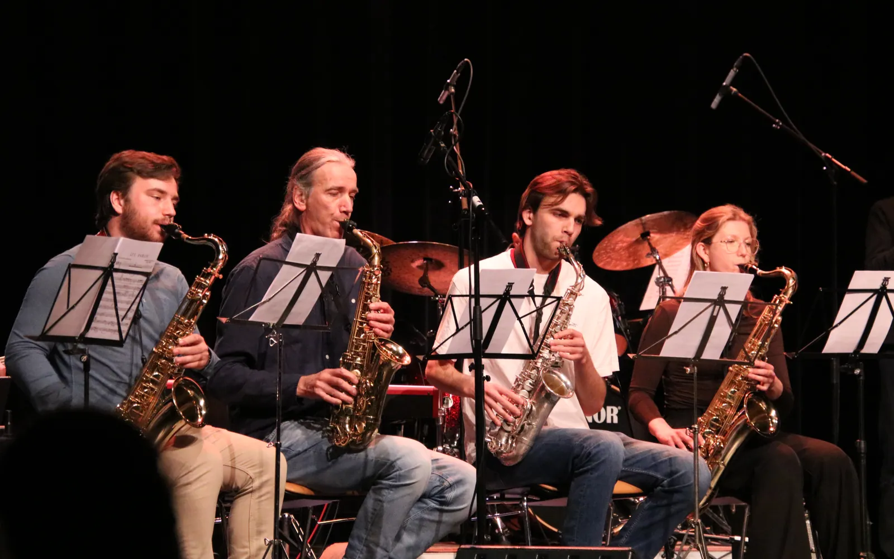
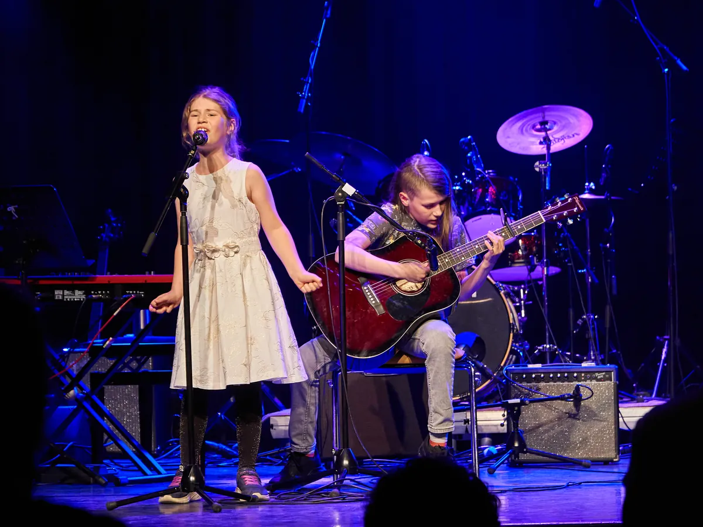
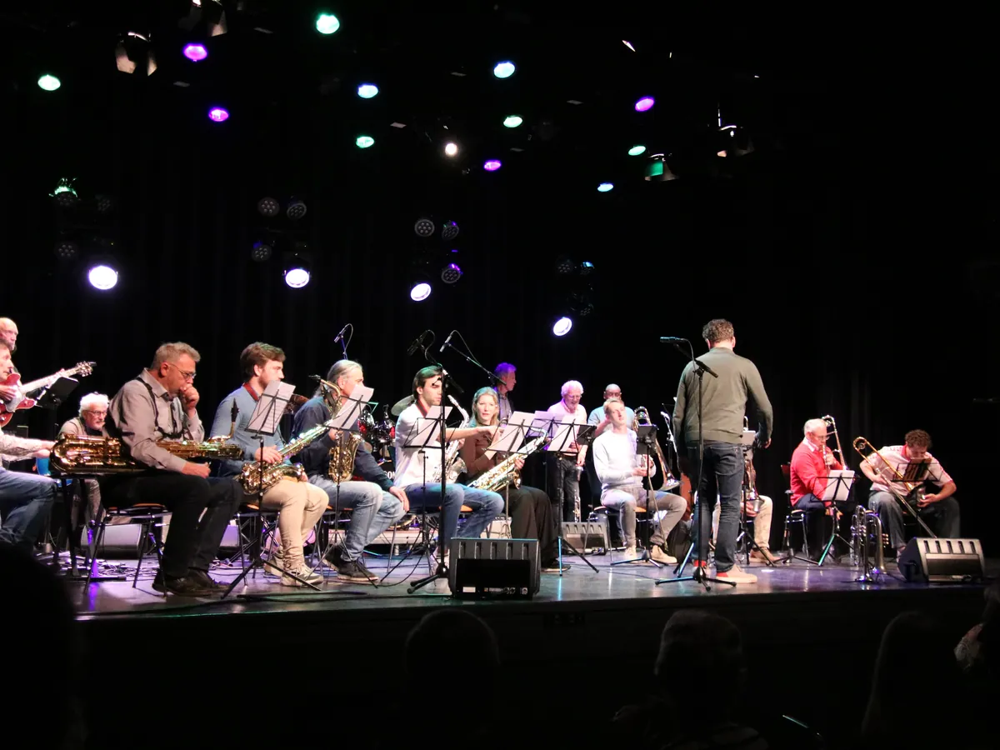
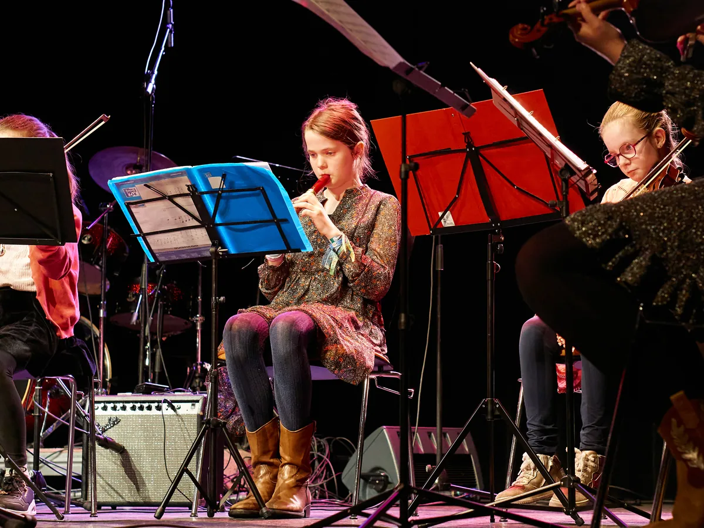
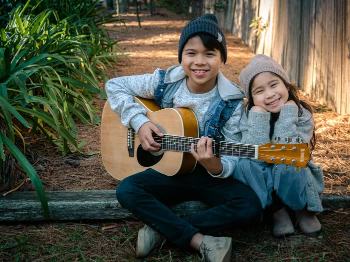
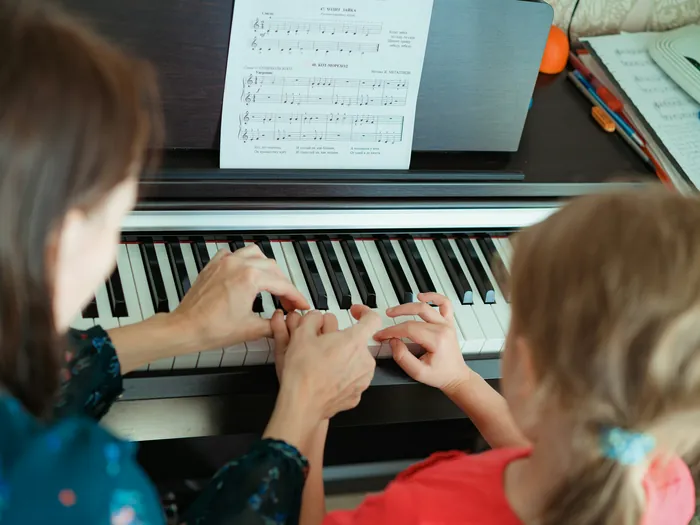

Piano
Melodie, harmonie en ritme in één instrument. Een brede basis voor elke muzikale ontwikkeling.
Sint-MichielsgestelDen DungenBerlicum
Docenten: Anny Tseng, Maarten van den Hoven, Jos van Erp, Wim Cooijmans
Dé muziekschool van de gemeente Sint-Michielsgestel · les in vier kernen
Muziek is voor iedereen, ongeacht leeftijd, niveau of achtergrond. Van klassiek tot pop en jazz, alleen of samen.

Melodie, harmonie en ritme in één instrument. Een brede basis voor elke muzikale ontwikkeling.
Docenten: Anny Tseng, Maarten van den Hoven, Jos van Erp, Wim Cooijmans

Van klassiek tot pop: akkoorden, begeleiding en je favoriete nummers, ook om mee te spelen in een band.
Docenten: Wido de Bonth, Jos van Erp, Wim Cooijmans

Akoestisch of elektrisch, basgitaar of ukelele. Van blues en rock tot folk en funk.
Docenten: Corné Biekens, Ton de Munnik

Het kleinste strijkinstrument met het hoogste bereik. Voor kinderen zijn er violen in kleine maten.
Docent: Elly Brouwers, ook dirigent van de Mini Maestro's

Leer je stem kennen en gebruiken, solo of in een band. Zangles is er vanaf 7 jaar.
Docent: Maaike Hermans

Een zilverachtige, stralende klank, van klassiek tot jazz en pop. Van piccolo tot basfluit.
Docenten: Wouter van Breugel, Leonie Pijpers-Clahsen

Binnen een paar lessen speel je al eenvoudige liedjes. Noten lezen leer je gaandeweg, voor kinderen en volwassenen.
Docent: Eleanor de Groot

Het instrument van jazz, soul en harmonieorkest. Alt, tenor of bariton.
Docent: Ludwig Attevelt

Zacht en lyrisch of krachtig en dramatisch. Van Mozart tot swing, en ook basklarinet.
Docenten: Christa ten Berg, Jonie Pijpers

Een betoverende, zingende klank die je in elk orkest direct herkent.
Docent: Anne-Marie van Mierlo

Koper met glans, voor harmonie, fanfare, bigband en pop.
Docent: Sep Otten

Klassiek geschoold, maar thuis in alle stijlen, van bigband tot rock. Tuba of bastuba? Mail ons voor de mogelijkheden.
Docent: Simon Emmen

Speel je drums, gitaar, toetsen of bas, of zing je? Studeer bekende nummers in en speel ze voor echt publiek.
Workshop vanaf € 125Jaarcursus vanaf € 375

Altijd al zo'n vette solo willen spelen? Door voordoen en nadoen, vraag en antwoord speel je al snel je eigen solo.
Tot 21 jaar € 125Vanaf 21 jaar € 225

Het jeugdorkest onder leiding van Elly Brouwers. Na ongeveer anderhalf jaar les speel je al mee, op viool, (blok)fluit, gitaar, klarinet of keyboard.
Per sessie € 60Buiten de gemeente € 75

Zingen, ritmes klappen en veel instrumenten uitproberen, onder leiding van Irene van Rooijen. Zo kies je straks het instrument dat bij je past.
Cursus € 250Buiten de gemeente € 350

Vraag twee gratis proeflessen aan in verschillende disciplines. Een docent neemt contact met je op.
Kies je proeflessen